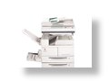
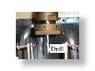

Mechanical Systems Control Laboratory Homepage

|
Advanced Vehicle Control Systems
The Automated Highway System (AHS) program aims at automating highway driving in California... |

|
Disk Drive Control
Bits of information are stored on and retrieved from computer disk drives using a magnetic read/write head... |

|
Motion and Torque Control
Motion control is a broad topic that is of importance to many areas... |
|  |
Copier Paperpath Control The objective of this project is to study fundamental principles for introducing advanced sensor, actuation and ... |
|
|  |
Intelligent Machining
The machine tool industry is also benefiting from the factors that are leading to advances in motion control ... |
|
ILP Summary '96-'97
MSC Lab. Research Summary Reports 1996-1997 (only partial). |